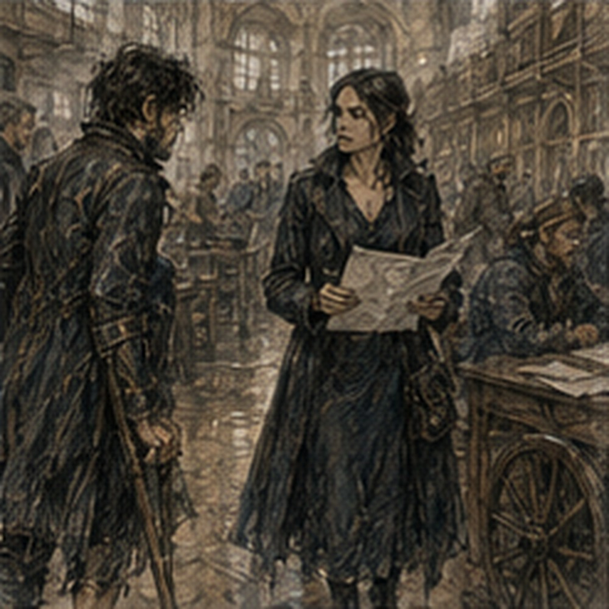
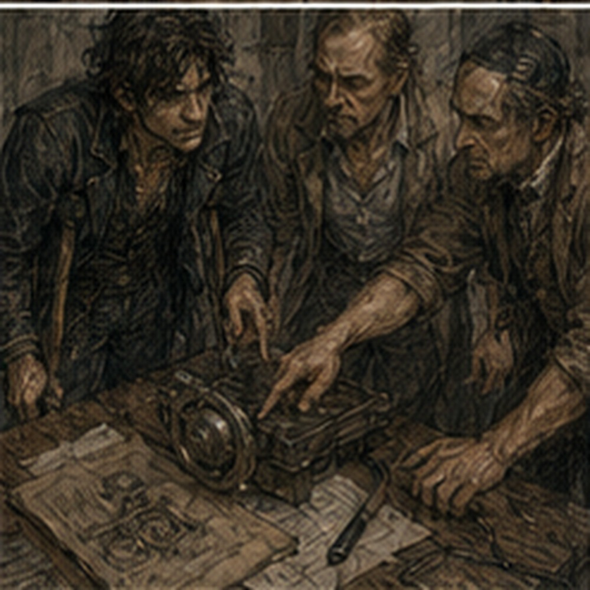

Lerris arrived with wood before breakfast. This was offensive. Not the wood. The hour. He leaned three lengths of smooth ash against the kitchen wall and immediately made the staircase unusable. I stared. He stared back.
“You weren't going up.”
“Still.”
“You can object after tea.”
“I haven't had tea.”
“I know.”
Terrible man. The keeper handed him tea. Not me. Worse. I crutched to the table. My right shoulder complained from yesterday's knife drills. Not badly. Enough to remind me that sitting still with Alden had somehow involved muscles. Lerris had already marked three post positions along the open side of the stairs. I looked. Then looked away. Carpenter. His work. Good.
“How long blocked?”
“Part of morning.”
“I need Guild.”
“Front door remains functional.”
“I know.”
“Then why ask?”
“I didn't.”
He smiled. I hated tradesmen who enjoyed themselves. The rail was ordinary ash. No ornament. Rounded enough for a hand. Lerris had brought the posts cut long and would fit them on site. Dela's material. My labor. Three copper each side of the arrangement. Simple. I ate bread and cheese while he worked. Saw. Chisel. Measure. Fit.
The noise made the storage room impossible, so I stayed in the kitchen. This was mildly annoying and unexpectedly pleasant. Someone else was changing the stairs. I did not supervise. Mostly. At one point Lerris set a post against the stringer and sighted upward. I saw the angle.
“That's not vertical,” I said.
“No,” Lerris said.
“Why?”
“Stair isn't,” he said.
“Oh.”
I shut up. Good.
Ten minutes later:
“Are the fasteners long enough?”
He stopped. Looked at me.
“Yes.”
“Into stringer?”
“Yes.”
“How much bite?”
“Enough.”
Useless unit. I opened my mouth. Closed it. He resumed. This was work. Not my work. The keeper saw me.
“Pain?”
“No.”
“Then what?”
“Restraint.”
She laughed. Rude.
*
The Guild cart arrived at second bell. Not Mira's boy. A different driver. I had arranged it yesterday before leaving. Progress. I carried nothing. Also progress. Calendar stayed home. Notebook stayed home. Medical instructions stayed in belt pouch because those were supposed to. Crutches went in first. I got in. No drama. At Guild, the contract board had six new postings. I saw them.
Did not stop. That felt almost suspiciously healthy. No. I had a wound check. Priorities existed before amputation too. Sera's room smelled like boiled cloth. She unwrapped the limb. Less swelling again. The skin around the incision looked calmer. Still ugly. Less frightening.
Maybe I was getting used to it. I did not know whether that was good.
“Margin?”
“Good.”
“Drainage?”
“Almost none.”
“Heat?”
“No.”
“Revision?”
“No current reason.”
There. No current reason. Good. She pressed. One place sharp. Another dull. The end of the limb had begun to feel less like one giant injury and more like several different sensations occupying the same area. Pressure. Pull. Itch. Ache. Numb patch. Sharp spot. Phantom toes. Phantom heel. Phantom ankle turned inward today. None of them agreed.
“How were stairs?”
“Seven.”
“I know. I was there.”
“Then why ask?”
“I asked how.”
“Fine.”
“Swelling after?”
“Some.”
“Resolved?”
“Yes.”
“Rail installation?”
“Started.”
“Good.”
“Everyone.”
“What?”
“Nothing.”
She rewrapped.
“Seven again?”
“Not today.”
I looked at her.
“Why?”
“You went out two nights ago, worked the day before that, did seven yesterday, then knife drills.”
“How do you know knife drills?”
“Alden.”
“Why are all my friends informants?”
“He asked if seated hand work was likely to damage your leg.”
I stopped.
“Oh.”
“He also described it badly.”
“That sounds right.”
“Today you rest the stair work.”
“I came all the way here.”
“For wound care.”
“I could do five.”
“No.”
“Three.”
“No.”
“One.”
“Greg.”
Fine. My right thigh was sore anyway. She had noticed. Annoying.
“Tomorrow?”
“If swelling remains down.”
Bad unit. Fine. I left.
*
Edrin was in the main hall. I saw her before she saw me. Dark coat. Guild papers under one arm. Talking to a clerk. Normal. For half a second I thought about turning around. Not because I disliked her. Because I knew what she owned. Sinkstone. Varo. The three batches.
The question that had sat untouched while my leg became a medical event. My brain woke so fast it was embarrassing. Edrin finished with the clerk. Turned. Saw me. Her eyes went to the crutches. Then back to my face.
“Greg.”
“Edrin.”
“You're out.”
“Apparently.”
“How are you?”
“Missing something.”
She looked at me.
“Bad joke?”
“Medium.”
“Good.”
She did not ask to see the wound. Excellent.
“You have a minute?”
There.
“Yes.”
She looked toward a side room.
“Sit.”
“I am excellent at that now.”
“Still medium.”
We took a small interview room off the hall. Chair. Table. No stairs. I noticed. Of course. Edrin put the papers down. Not the seized samples. Papers.
“Varo.”
There. My hands tightened on crutch grips. Wrapped. No pain.
“What did they say?”
“I spoke to Master Varo and two workers separately.”
“Master Varo is a person?”
“Varo Chemical is his shop.”
Good. New fact. Small.
“Name?”
“Jalen Varo.”
I stored it.
“Did they treat the seized stock?” I asked.
“No evidence they did,” Edrin said.
Not no. No evidence. Good.
“Silas Marris?”
“Varo recognizes the company as freight and purchasing intermediaries. Says they've bought common reagents before. Nothing unusual enough that he remembered until I showed records.”
“What reagents?”
“Lime wash. Brine salts. Two mineral binders. Ordinary processing materials.”
“Could any produce the profiles?”
“Not alone.”
“Together?”
Edrin gave me a look.
“I asked.”
“Good.”
“Varo says the three seized profiles are not what he would expect from one treatment applied to inconsistent kestrin.”
That matched.
“Because internal variance too narrow?”
“Yes.”
“Did he test?”
“He examined my notes. I did not give him seized material.”
“Why?”
“Because I don't hand evidence to every chemist I interview.”
Correct.
“Could he reproduce?”
“He thinks he could reproduce one profile approximately if given time, stock, and enough rejected pieces.”
“Which?”
“Strong immediate suppression, some residual.”
Batch two.
“Approximate.”
“Yes.”
“Not narrow?”
“He specifically refused to promise the narrowness.”
Interesting.
“How would he get narrow?”
“He gave me four answers,” Edrin said.
I leaned forward. Residual limb pulled. Ignored.
“One: start with unusually uniform raw stone,” she continued.
Dorrin sorting. Possible.
“Two: test individual pieces and reject aggressively.”
Bale. Slow. Expensive.
“Three: process pieces separately and adjust treatment based on response.”
Very expensive.
“Four: process a larger lot, test, then sort finished pieces into behavior bands.”
There. Not manufacturing consistency. Selecting it after.
“Could look like process control.”
“Yes.”
“Without being process control.”
“Correct.”
“Did he think that likely?”
“He thinks some combination is more likely than a single clever treatment.”
Good.
“Anything else?”
Edrin paused. There was.
“Varo asked why anyone would pay for it.”
I stopped.
“What did you say?”
“That is one of my questions.”
“His answer?”
“He said suppression stone is cheap because most uses tolerate variation. If you need exact behavior, there are better materials.”
“More expensive.”
“Yes.”
“So making cheap kestrin exact only makes sense if cheap matters or kestrin matters.”
“Or if someone needs enough volume that better material becomes expensive.”
Volume.
“How much seized?”
“Enough to matter. Not enough to answer.”
“Shipment sizes?”
“Greg.”
“Right.”
Her investigation. I sat back.
“Did Varo know anyone doing this?”
“No.”
“Could he name shops capable?”
“Several could do parts. None he would accuse based on this.”
“Did he?”
“No.”
Good. No convenient producer.
“Silas Marris records?”
“Still being traced.”
“Origin?”
“Declared origin changes by shipment.”
I looked at her.
“That sounds bad.”
“It sounds like a trading company.”
Right. Freight intermediaries. Multiple origins normal.
“Any one region recurring?”
“Not enough to say.”
“Darrowmere?”
“No.”
Immediate. Good.
“Any reason to connect?”
“No.”
Excellent. I liked Edrin.
“Why tell me now?”
She looked at me.
“Because you asked good questions before.”
There. Not needed. Valued. Different.
“And?”
“And because you are sitting here.”
“Could have sent note.”
“Yes.”
“Did you need me?”
“No.”
Good. It hurt less than expected. Maybe because she had brought the information anyway.
“What do you want from me?”
“Nothing today.”
Terrible.
“Then why room?”
“Because if I told you in the hall, you would ask twenty questions while blocking traffic.”
Fair. I looked at her papers.
“Can I see notes?”
“No.”
“Why?”
“Because they include names and purchasing records you do not need.”
“Can I see the four mechanisms?”
“I just told you.”
“Exact wording?”
“No.”
“Edrin.”
“No.”
Good. Boundaries remained. My brain ran anyway. Uniform raw. Reject aggressively. Piece-specific treatment. Post-process sorting. Could combine. Cheap kestrin exactness. Why? Volume. Compatibility. Specific residual profile. Repeat exposure. Three profiles maybe three specifications. Or one producer testing variants. Or different producers.
Or one customer with multiple use cases. Or seized batches unrelated beyond company. Stop.
“Were the three batches shipped together?”
“No.”
I had asked before stopping. Fine.
“How far apart?” I asked.
“I am not giving you shipment records,” Edrin said.
“Days? Months?”
“Greg.”
“Fine.”
She almost smiled.
“Anything from Varo that surprised you?”
“Yes.”
I waited.
“He was less impressed by the chemistry than by the sorting problem.”
There.
“Meaning?”
“He said making kestrin suppress mana is easy. Making many pieces behave nearly alike is mostly a measurement problem.”
Oh. That landed. Testing. Measurement. Reference. Bale's brass line and mana bead. Edrin's piece-level tests.
“How fast can you measure?”
“Currently? Not fast enough for bulk commercial sorting.”
“Could someone have a faster test?”
“Yes.”
“Holl.”
“Maybe.”
I stopped. Holl had invited faster cheap test work. Different context. No Silas Marris link. Do not manufacture.
“Varo?”
“He uses chemical proxies for some treatment steps, not final magical response.”
“So someone could control process variables tightly without testing final behavior.”
“Yes.”
“Or test final behavior with a method we don't know.”
“Yes.”
“Or start uniform.”
“Yes.”
“Or all.”
“Yes.”
Fuck. The question had not narrowed. No. It had. The hard part was measurement or selection, not suppression chemistry. Maybe. According to Varo. Professional opinion. Not truth.
“What do you think?”
I asked. Edrin looked at me for a moment.
“I think somebody cares about repeatability enough to spend money on it.”
“That we knew.”
“We suspected.”
“Fine.”
“I think Varo makes a single secret treatment less likely.”
“Yes.”

“I think the production chain may involve more hands than we assumed.”
“Raw sorting, treatment, testing, resorting.”
“Possibly.”
“Silas Marris could be only freight.”
“Possibly.”
“Or purchasing.”
“Possibly.”
“Or customer.”
“Possibly.”
“This is terrible.”
“It is investigation.”
I smiled. There it was. Interest. Pure. For maybe five minutes I had forgotten the crutches against the table. Then I shifted to stand. My body reminded me. Right foot. Hands. Crutches. Edrin watched. Not pity. Assessment.
“You going somewhere?”
“Varo.”
“No.”
Immediate. I laughed.
“I was joking.”
“You were not.”
“Partly.”
“No.”
“I could hire a cart.”
“No.”
“I know.”
“Do you?”
“Yes.”
She waited. I wanted to go. Not because she needed me. Because the problem existed. Varo had a shop. People. Processes. Equipment. I could ask. Observe. Maybe see what he meant by measurement problem. Edrin owned contact.
She had explicitly told me before not to manufacture access. That had not changed because I lost a leg. Physical capability was not even the first barrier. Permission was. Annoying. Good.
“Can I talk to Holl about faster testing?”
Edrin considered.
“Holl already invited you to work on faster cheap testing in his own context.”
“Yes.”
“You may talk to Holl about Holl's work.”
“Not seized stock.”
“Correct.”
“Not Silas Marris.”
“Correct.”
“Not Varo.”
“Correct.”
“Can I ask general questions about throughput?”
“Yes.”
There. Permission. Bounded. My brain immediately planned route. No. Not today. Sera said no stair work, not no Holl. Different. But I was tired. Also rail installation. Also no need.
“Tomorrow maybe.”
Edrin looked almost surprised.
“Maybe.”
I hated that she noticed.
“Do not make a face.”
“I didn't.”
“Everyone does.”
“Greg.”
“Fine.”
She gathered papers.
“Anything else?”
“Yes.”
“What?”
“Your leg.”
I looked down.
“What about it?”
“Does magic feel different?”
There. First direct magic question from Edrin after loss. I thought.
“No casting.”
“I know.”
“Channels quiet.”
“Hessa?”
“Yes.”
“Body reference?”
I looked at her. Interesting. Dangerous.
“Phantom foot exists.”
“I meant in spell architecture.”
“I know.”
“And?”
“I don't know.”
Good answer. True. Edrin nodded.
“Don't test because I asked.”
“I wasn't.”
She looked at me.
“I wasn't today.”
“Better.”
She left. I sat another minute. The room felt too small. Not because storage. Because Varo existed somewhere in Carrow and I could not simply go there. No. Could not simply go there had always been true. I had obeyed before the accident. Important. The crutches made the limitation visible, not new. Still irritating. I stood. Slow. Went home.
*
Lerris had installed two posts. The rail itself was not attached. The staircase looked worse.
“Excellent.”
He was kneeling at the third post.
“What?”
“Now I have neither rail nor clear stairs.”
“You still weren't climbing.”
“Principle.”
“Go away.”
I did. The storage room smelled faintly of cut ash. My damaged left boot sat beside the folded table. I looked at it. Then at my right boot. Then away. Not today. I wanted to write Varo notes. Notebook upstairs. Wrong notebook again. Current notebook was on crate. Fine.
I wrote:
VARO:
SUPPRESSION EASY.
CONSISTENCY HARD.
POSSIBLE: UNIFORM RAW / REJECT / ADJUST PIECES / SORT AFTER.
MEASUREMENT PROBLEM?
WHY PAY?
Then:
PEL MARRIS MAY ONLY BE FREIGHT.
Crossed out MAY ONLY.
Wrote:
ROLE UNKNOWN.
Better.
Then:
HOLL: GENERAL THROUGHPUT ONLY. DO NOT MENTION SEIZED STOCK.
Good. Boundary written. I stared at the page. My old instinct wanted arrows. Producer. Processor. Tester. Trader. Customer. Three batches. Three profiles. Could draw. No. Not because forbidden. Because Lerris started hammering and I could not think. I went to kitchen.
“Can you stop?”
“No.”
“Five minutes?”
“No.”
“This is intellectual work.”
“This is a staircase.”
He hammered. I laughed. Fine.
*
Arlo arrived while Lerris was still working. Not for me. He had come to borrow a clamp from Lerris. Of course they knew each other. Carrow had approximately twelve people. Arlo saw me.
“Contact test worked.”
“What?”
“Lampblack.”
I forgot Varo immediately.
“Show.”
“No regulator.”
“Then explain.”
He did. Thin lampblack on mount face. Clamp. Release. Uneven transfer. Outer edge contacting first. Changing clamp order changed how body seated against face. There.
“Warp?”
“Maybe mount. Maybe body. Vessa is checking straightedge.”
“Hot?”
“Cold first. Hot tomorrow.”
“Good.”
Arlo nodded.
“Your idea helped.”
There. I felt pleased.
Then he added:
“Vessa says don't become unbearable.”
“Too late.”
“Yes.”

He borrowed clamp. Left. No invitation. No job. Fine. Lerris looked at me.
“What?”
“Nothing.”
“Face.”
Fuck everyone.
*
By late afternoon, the rail was attached through the first nine steps. Not complete. Lerris stopped.
“Why?”
“Wood needs final fit at landing tomorrow.”
“You said two days.”
“This is day one.”
“I know.”
“Then.”
Terrible. I put one hand on the new rail from the floor. Smooth. Solid. Pulled. No movement. Lerris watched.
“Don't test my work like that.”
“That was barely a test.”
“Exactly.”
Good line. I released.
“Tomorrow?”
“Finish.”
“Then can I use it?”
“Ask your healer.”
Everyone owned something. Fine. I paid him one copper of my three labor now, two on completion. His terms. Reasonable.
*
Before dinner, Sevren appeared in the doorway with rain on one shoulder and no obvious reason to be there.
“South route?”
“Done.”
“That was fast.”
“It was yesterday.”
Right. Time.
“Where are you going?”
“Octavia.”
“Again?”
“She has a package.”
“Romantic.”
“It's cloth.”
“Very romantic.”
He looked at the half-finished rail.
“That's new.”
“Yes.”
“Can you use it?”
“No.”
“Then terrible rail.”
“Unfinished.”
“Excuses.”
He came in. Saw my notebook open.
“Work?”
“No.”
“What?”
“Sinkstone.”
He waited.
“Rocks.”
“Ah.”
He had no interest. This was refreshing.
“Edrin talked to Varo.”
“Who?”
“Chemical shop.”
“Good?”
“Interesting.”
“Are you going there?”
“No.”
He looked at me.
“Really?”
“Yes.”
“Why?”
“Not my investigation.”
“Since when has that stopped you?”
“Frequently.”
He thought.
“Has it?”
“Fuck you.”
He laughed. Then he noticed the damaged boot.
“That yours?”
“Was.”
He picked it up before I could object. Turned it over.
“Tam can use this.”
“Yes.”
“Good leather here.”
He pressed the upper near heel. I watched. Nothing happened. It remained leather.
“Take it to him?”
“Not now.”
“Why?”
“I don't know.”
Sevren put it back exactly where it had been.
“Okay.”
No question. Good. He sat on the crate.
“Cards?”
“You have package.”
“Ten minutes.”
We played one hand. I won. Finally.
“Cheater,” he said.
“I learned from you.”
He left for Octavia's delivery. The sinkstone problem remained open on the notebook. The boot remained beside the table. The rail remained incomplete. Three unfinished things. I did not touch any of them for several minutes. At dinner I tried explaining Varo to the keeper. Mistake.
“So rocks?”
“Yes.”
“Different rocks?”
“Same kind, processed.”
“Bad?”
“Not necessarily.”
“Illegal?”
“Unknown.”
“Stolen?”
“Seized.”
“Why?”
“Investigation.”
“By you?”
“No.”
“Then why do you care?”
I stopped. Because future? No. Because unusual consistency. Because measurement. Because someone did something difficult. Because I liked problems.
“Interesting.”
She nodded. That answer required no justification. Good.
“Rail interesting?”
“Yes.”
“More than rocks?”
“No.”
She laughed. I ate stew.
*
At night the hammering was gone. The house sounded wrong without it. I looked at the half-finished rail. Nine steps. Not usable yet. Could maybe practice first five? No. Lerris said incomplete. Sera said rest stairs today. Two owners. Enough. I stayed downstairs. This was less difficult than yesterday. Not easy. Less. I opened the notebook again.
WHO IS PRODUCING CONSISTENT SINKSTONE / HOW?
Old question. Still good.
Under it I added:
MAYBE WRONG UNIT.
WHO SORTS / MEASURES / SPECIFIES?
There. That felt useful. Maybe too useful. I stared. The producer might not be one person. Could be chain. Raw seller. Treater. Tester. Trader. Customer. Who sets tolerance? Customer maybe. Who rejects? Processor maybe. Who measures? Unknown. The hard part might be the test. Holl. No. General only. I closed notebook. Boundary. Good.
Then I looked at the rail again. Someone had changed a staircase because I asked. Edrin had brought me information because she thought I saw things differently. Arlo had used an idea because it happened to help.
None of those made me necessary. I did not need to decide whether that was good. My phantom heel pressed into the floor. I lifted my actual thigh slightly. The phantom heel stayed. Wrong. Fine.
Tomorrow Lerris would finish the rail. Tomorrow I might talk to Holl. Maybe. No promise. No chase. I turned out the lamp. Upstairs remained upstairs. Varo remained elsewhere. For once, elsewhere could stay elsewhere overnight.